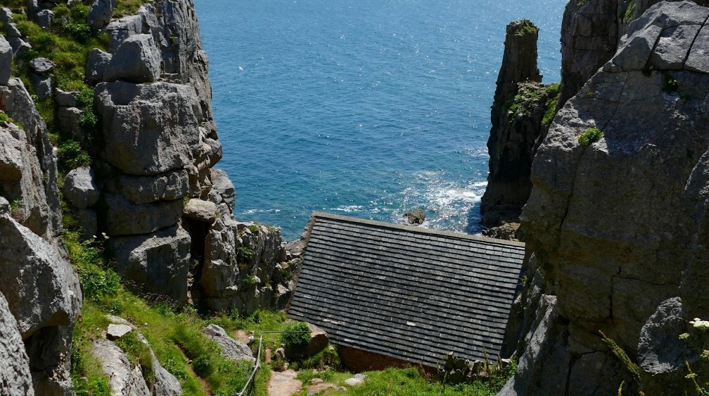
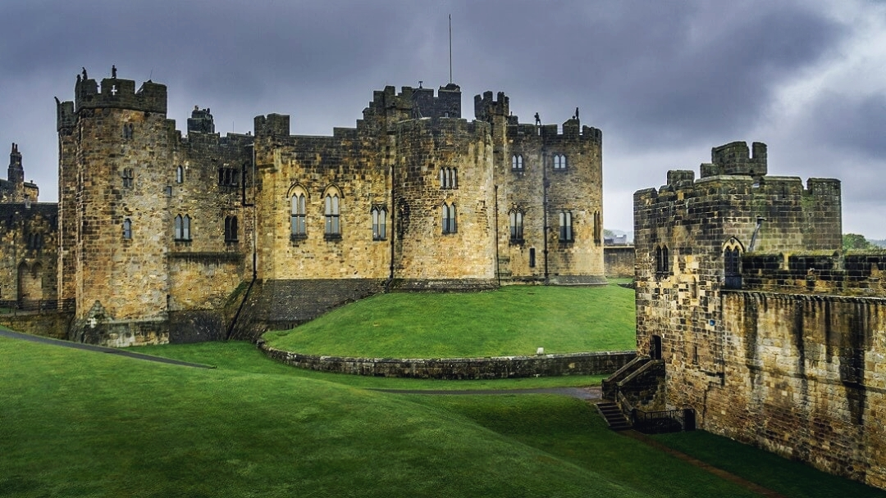

From the humble beginnings in the Two Rivers to the ominous desolation of the Blight, journey through the breathtaking real-world landscapes that bring The Wheel of Time to life. Traverse rugged mountain passes, ancient forests, and mystical lakes that stand in for the lands of Rand, Moiraine, and their companions. These filming locations not only echo the deep lore and rich cultures of Robert Jordan’s world — they become characters themselves, shaping the story’s epic scope. Whether you're a follower of the Light or tempted by the Shadow, these places will pull you into the turning of the Wheel like never before.
Most Popular Locations
New College: Lyra's Jordan
New College, located in Oxford, served as the filming location for Jordan College in His Dark Materials. The historic architecture, with its medieval cloisters and spires, brings the world of Lyra Belacqua to life, offering a glimpse into the prestigious institution that played a key role in her journey.

Great Soča Gorge: Two Rivers
The Great Soča Gorge in Slovenia serves as a striking part of the Two Rivers landscape in The Wheel of Time, where the ritual of joining the Women's Circle takes place. The gorge's turquoise waters and towering cliffs capture the natural beauty and mysticism of this pivotal moment in the series.

Glenfinnan:
Hogwarts' landscapes.
Glenfinnan Viaduct and Loch Shiel, located in the Scottish Highlands, form some of the most iconic backdrops in the Harry Potter films. The Hogwarts Express famously crosses the viaduct on its way to school, while Loch Shiel stands in for the Black Lake.

Saint Govan's Chapel:
Saint Govan's Chapel:
Mrs. Coulter's hideout
Saint Govan's Chapel, perched on the cliffs of Pembrokeshire, was used as the setting for Mrs. Coulter's hideout in His Dark Materials. Its secluded, rugged location and historic charm make it the perfect backdrop for the character’s secretive and enigmatic presence.

Masseria Lo Spagnulo: Home Of Two Brown Ajah Sisters
Masseria Lo Spagnulo, an 18th-century fortified farmhouse near Ostuni in Puglia, Italy, served as the home of Brown Ajah sisters Verin and Adeleas in The Wheel of Time Season 2. It’s also where Moiraine and Lan took refuge for a time. Today, this historic masseria operates as a 3-star hotel.

Alnwick Castle: Time For Flying Lessons
A Castle set in Northumberland, England, was used as the filming location for Hogwarts in Harry Potter and the Philosopher’s Stone, most notably for Madam Hooch’s flying lesson scene. The castle’s outer bailey served as the training ground where Harry first learns to ride a broom.